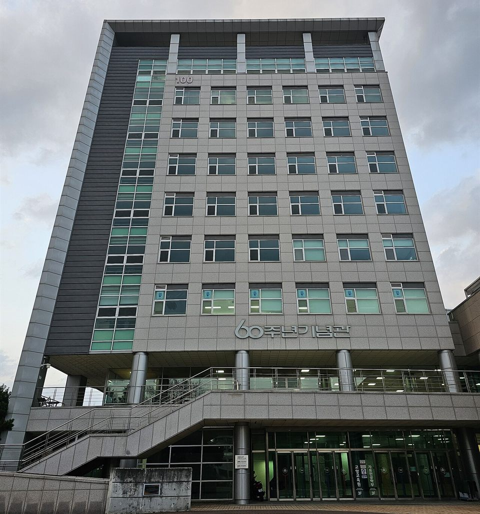

수능을 앞둔 지금, 반영비율 표는 "어느 과목에 몇 시간을 쓸지"를 정하는 근거입니다. 이 글은 강원대학교 전형을 소개하는 글이 아니라, 2027학년도 정시모집요강에 실린 숫자를 과목별 공부 순서로 바꿔 읽는 글입니다. 강원대학교는 같은 춘천캠퍼스 안에서도 인문과 자연의 무게중심이 정반대이고, 인문계에서는 영어가 국어와 같은 무게를 가집니다. 고3 영어과외를 계속할지, 그 시간을 국어로 돌릴지 고민 중이라면 먼저 이 표부터 확인하세요.
| 캠퍼스 · 계열 | 국어 | 수학 | 영어 | 탐구(2과목) |
|---|---|---|---|---|
| 춘천 인문사회 | 30% | 20% | 30% | 20% |
| 춘천 자연·공학·의학 유형1 간호대학·산림환경과학대학·동물생명과학대학 등 | 20% | 30% | 20% | 30% 사탐·과탐·직탐 중 선택 |
| 춘천 자연·공학·의학 유형2 의과대학·약학대학·수의과대학·자연과학대학·IT대학 등 | 20% | 30% | 20% | 30% 과학탐구만 |
| 삼척(도계 포함) | 국어·수학·영어·탐구 중 백분위가 높은 2개 영역을 각 50% (탐구를 고르면 2과목 평균) | |||
춘천캠퍼스는 ㉮·㉯군, 삼척캠퍼스(도계 포함)는 ㉮·㉯·㉰군에서 모집합니다. 국어·수학·탐구는 백분위로, 영어는 등급을 백분위로 바꾼 점수로 넣습니다. 춘천 예체능 모집단위와 강릉·원주캠퍼스는 반영 방식이 따로 있습니다.
춘천 인문사회 모집단위의 배점은 국어 150점, 영어 150점, 수학 100점, 탐구 100점입니다. 영어를 "절대평가라 대충 등급만 맞추면 되는 과목"으로 생각하기 쉽지만, 강원대학교 인문계에서는 영어 점수 1점의 무게가 국어 점수 1점과 같습니다. 수학이나 탐구보다는 1.5배 무겁습니다.
그렇다고 무조건 영어부터 하라는 뜻은 아닙니다. 아래 등급표를 보면 영어는 1등급에서 4등급까지 한 등급에 3점씩만 차이가 납니다. 이미 2~3등급이 나오는 학생이 한 등급을 더 올려도 3점입니다. 같은 시간을 국어에 넣어 백분위를 5점, 10점 올릴 수 있다면 그쪽이 점수로 더 크게 돌아옵니다. 순서는 이렇게 정리됩니다.
자연·공학·의학계열은 인문과 정반대로 수학 150점, 탐구 150점, 국어 100점, 영어 100점입니다. 여기에 수학에서 미적분이나 기하를 고르면 수학 반영점수의 10%가 가산됩니다. 수학은 비중으로 한 번, 가산점으로 한 번 더 이득을 보는 구조라, 자연계 지망생의 남은 시간표는 수학이 맨 앞에 와야 합니다. 고3 수학과외를 받고 있다면 지금은 새 단원보다 선택과목의 고난도 유형과 실수 줄이기에 시간을 쓰는 편이 이 구조에 맞습니다.
탐구는 모집단위가 어느 유형에 속하느냐에 따라 달라집니다.
영어는 20%라 등급 하나가 전체에서 움직이는 폭이 인문계보다 작습니다. 그래도 4·5등급 경계의 10점 차이는 그대로라, 그 아래로 떨어지지 않게 지키는 것까지는 필요합니다.
| 등급 | 1 | 2 | 3 | 4 | 5 | 6 | 7 | 8 | 9 |
|---|---|---|---|---|---|---|---|---|---|
| 환산 백분위 | 100 | 97 | 94 | 91 | 81 | 78 | 75 | 72 | 0 |
춘천·삼척캠퍼스 일반 모집단위 기준입니다.
등급 간격이 고르지 않다는 점이 핵심입니다. 1~4등급, 5~8등급 안에서는 한 등급에 3점씩이지만, 4등급과 5등급 사이만 10점입니다. 영어 원점수로 치면 60점 선입니다. 모의고사에서 영어가 60점 안팎을 오가는 학생은, 강원대학교 기준으로는 국어 백분위 10점과 같은 크기의 점수가 걸린 시험을 보고 있는 셈입니다. 이 학생에게 남은 기간 영어 1순위는 어려운 빈칸 문제가 아니라 듣기와 쉬운 독해에서 실수를 없애 60점 위에 안정적으로 올라서는 것입니다.
삼척캠퍼스(도계 포함)는 춘천과 계산 방식이 완전히 다릅니다. 국어·수학·영어·탐구 네 영역 가운데 백분위가 높은 두 영역만 골라 각각 50%씩 넣습니다. 나머지 두 영역은 점수에 들어가지 않습니다. 자연과학·공학계열 모집단위는 여기에 수학과 과학탐구 가산점(각 반영점수의 10%)이 붙은 점수로 비교합니다.
이 구조에서 할 일은 단순합니다. 최근 모의고사 성적을 놓고 꾸준히 상위 두 자리에 드는 영역을 고른 뒤, 그 두 영역에 시간을 몰아 씁니다. 세 번째 영역은 "혹시 두 영역 중 하나가 무너질 때 대신 들어갈 예비" 정도로 유지합니다. 탐구를 두 영역 중 하나로 쓰려면 두 과목 평균이 들어가므로, 한 과목만 잘하고 한 과목이 약하면 생각보다 점수가 낮게 나온다는 점도 함께 확인해야 합니다.
강릉·원주캠퍼스는 통합 이후에도 별도 모집요강으로 정시를 뽑습니다. 반영 영역을 고르는 방식이 춘천·삼척과 다르고, 치의예과는 따로 정한 반영비율을 씁니다. 이 두 캠퍼스를 지원한다면 강릉·원주캠퍼스 요강을 따로 열어 확인하세요.
한국사는 4등급을 기준으로 위로는 가점(1등급 +1.5점), 아래로는 감점(9등급 −2.5점)이 붙습니다. 폭이 작아 당락을 크게 흔들지는 않지만, 4등급 아래로 내려가면 깎이기 시작하니 기본 개념 정리 정도는 수능 전에 한 번 해 두는 것이 안전합니다.
👉 춘천 영어과외 선생님 · 춘천 수학과외 선생님 · 춘천 국어과외 선생님 · 춘천 지역 과외 안내
학생 수준에 맞는 선생님을 24시간 안에 추천해 드려요. 상담은 무료입니다.